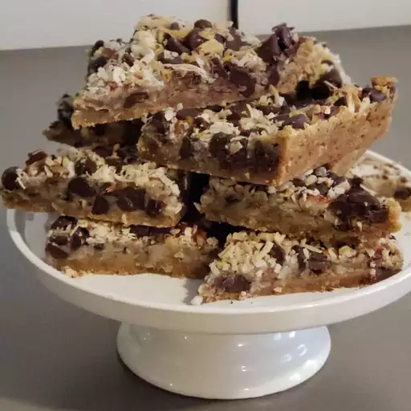

Extremely yummers dessert
Ingredients Required:
- 1 ½ cups graham cracker crumbs
- ½ cup butter, melted
- 1 (14 ounce) can Eagle Brand Sweetened Condensed Milk
- 2 cups semisweet chocolate morsels
- 1 ⅓ cups flaked coconut
- 1 cup chopped nuts
Steps to Make:
- Preheat the oven to 350 degrees F (175 degrees C). If using a glass dish, preheat the oven to 325 degrees F (165 degrees C). Coat a 9x13-inch baking dish with cooking spray.
- Mix graham cracker crumbs and butter in a bowl until well combined. Transfer the mixture to the prepared baking dish and press onto the bottom.
- Pour sweetened condensed milk on graham cracker crust. Sprinkle with an even layer of chocolate chips, coconut, and nuts. Press toppings down firmly with the back of a fork.
- Bake in the preheated oven until lightly browned, about 25 minutes. Cool completely, then cut into 36 bars or diamonds.